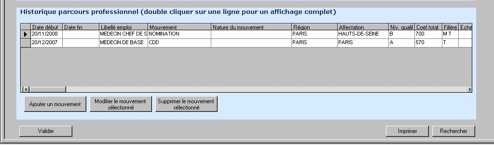

1. Introduction
L'application GESPRAT est un système d'information dédié à la gestion des données des praticiens.
Ce guide de formation décrit les fonctionnalités de la version 1.0 de GESPRAT, mise en ligne le 17/12/2007 (document daté du 05/01/2009).
Image : Écran de connexion de l'application Gesprat.
2. Recherche d'un Praticien
L'accès aux informations d'un praticien se fait via un module de recherche.
Image : Fenêtre de recherche d'un praticien.
2.1 Recherche Alphabétique
La recherche alphabétique permet de trouver un praticien en cliquant sur la première lettre de son nom.
Image : Sélection de la lettre pour la recherche alphabétique.
Après sélection d'une lettre, la liste des praticiens dont le nom commence par cette lettre s'affiche.
Image : Liste des praticiens suite à une recherche alphabétique.
2.2 Recherche par Critère
Il est également possible d'effectuer une recherche multicritères en utilisant les champs disponibles tels que le nom, le prénom, le numéro RPPS, etc.
Image : Formulaire de recherche par critères.
2.3 Résultat de la Recherche
Les résultats de la recherche s'affichent sous forme de liste. Un double-clic sur le nom d'un praticien permet d'accéder à sa fiche détaillée.
Image : Affichage des résultats d'une recherche de praticien.
Note : Le nombre de réponses est limité à 200. Si ce nombre est atteint, un message d'alerte s'affiche et il est conseillé d'affiner les critères de recherche.
Image : Message d'alerte pour un nombre de résultats trop important.
3. Saisie et Consultation de Données pour un Praticien
3.1 Fenêtre Principale de GESPRAT
Après avoir sélectionné un praticien, la fenêtre principale de GESPRAT s'ouvre, affichant les informations générales et donnant accès aux différents onglets de données.
Image : Fenêtre principale de l'application GESPRAT.
Les différents onglets disponibles sont :
- Situation administrative
- Parcours professionnel
- Rémunération
- Situation personnelle
- Thèse - Cursus - Diplômes
- Habilitations
- Utilitaires
3.2 Situation Administrative
Cet onglet permet de consulter et de saisir les informations relatives à la situation administrative du praticien (statut, affectation, etc.).
Image : Onglet Situation Administrative.
Des actions comme "Ajouter", "Modifier", "Supprimer" un mouvement sont possibles via des boutons dédiés.
Image : Détail d'une situation administrative.
3.3 Parcours Professionnel
Cet onglet regroupe les informations sur le parcours professionnel du praticien, incluant l'historique des concours, la liste d'aptitude, le déroulement de carrière et l'historique des mouvements.
Image : Onglet Parcours Professionnel.
3.3.1 Historique concours
Image : Saisie de l'historique des concours.
3.3.2 Liste aptitude niveau B
Image : Saisie de la liste d'aptitude.
3.3.3 Déroulement de carrière
Permet de visualiser le déroulement de carrière du praticien.
Image : Déroulement de carrière.
3.3.4 Historique parcours professionnel
Permet d'ajouter, modifier ou supprimer des mouvements dans le parcours professionnel.
Image : Historique du parcours professionnel.
Image : Ajout d'un mouvement.
Image : Modification d'un mouvement.
Image : Suppression d'un mouvement.
3.4 Rémunération
Cet onglet contient les informations liées à la rémunération du praticien, y compris la date de début d'expérience professionnelle et les aides à la mobilité.
Image : Onglet Rémunération.
Image : Saisie de la date de début d'expérience professionnelle.
Image : Formulaire d'aide à la mobilité.
Image : Suppression de l'aide à la mobilité.
3.5 Situation Personnelle
Permet de gérer les informations personnelles du praticien, telles que l'état civil, les coordonnées, et d'autres renseignements.
Image : Onglet Situation Personnelle.
Image : Autres renseignements personnels.
Image : Coordonnées personnelles.
3.6 Thèse - Cursus - Diplômes
Cet onglet est dédié à la gestion des informations sur la thèse, le cursus universitaire et les diplômes obtenus par le praticien.
Image : Onglet Thèse - Cursus - Diplômes.
Image : Informations sur la thèse et le cursus.
Image : Ajout d'un diplôme.
Image : Modification d'un diplôme.
Image : Suppression d'un diplôme.
4. Habilitations
L'onglet Habilitations permet de gérer les droits d'accès des utilisateurs à l'application GESPRAT. Il est possible d'ajouter, modifier ou supprimer des utilisateurs et de définir leur type d'accès (Lecture, Ecriture, Administrateur).
Image : Onglet Habilitations.
Image : Ajout d'un utilisateur.
Image : Modification des coordonnées d'un utilisateur.
Attention : La suppression d'un utilisateur est immédiate et sans demande de confirmation.
5. Utilitaires
La section Utilitaires offre des fonctionnalités supplémentaires, notamment la possibilité d'adresser un message à l'ensemble des utilisateurs d'une région ou d'un échelon, qui s'affichera au démarrage de leur application Gesprat.
Image : Accès aux Utilitaires.
Image : Envoi d'un message global aux utilisateurs.
Image : Exemple de message affiché au démarrage de l'application.
6. Historique des Versions du Manuel
- 1.0 (17/12/2007): Mise en ligne de l'application (Guide de formation daté du 05/01/2009)
7. Support et Contact
Pour toute question ou problème concernant l'application GESPRAT, veuillez vous référer aux contacts suivants (issus du guide de formation V1.0) :
- Rédaction du guide : Dominique Jouault (Système d'information)
- Maîtrise d'ouvrage (CNAMTS) : Docteur Patricia Locquet, directeur de projet
- Maîtrise d'œuvre (Service Informatique) : Régis Bettini, chef de projet
Veuillez vérifier en interne pour les contacts de support les plus récents au sein de la DRSM IDF.